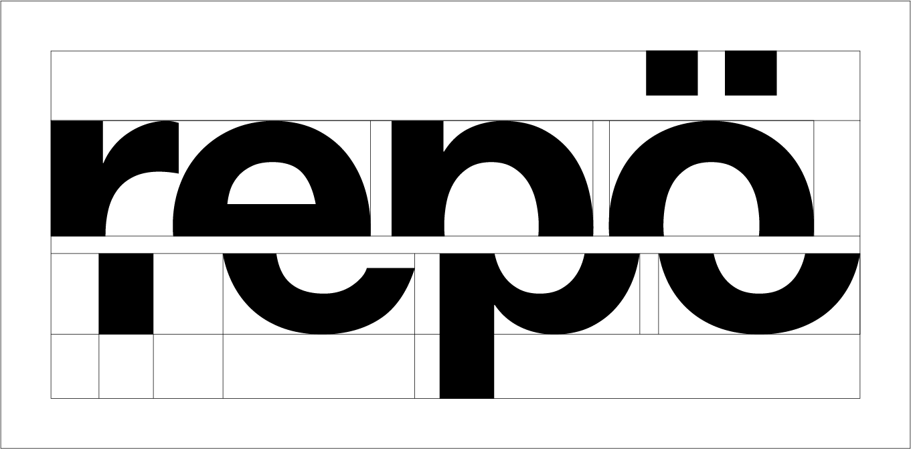
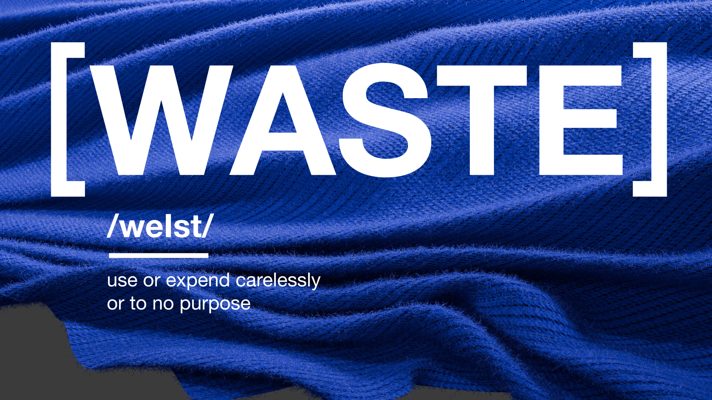
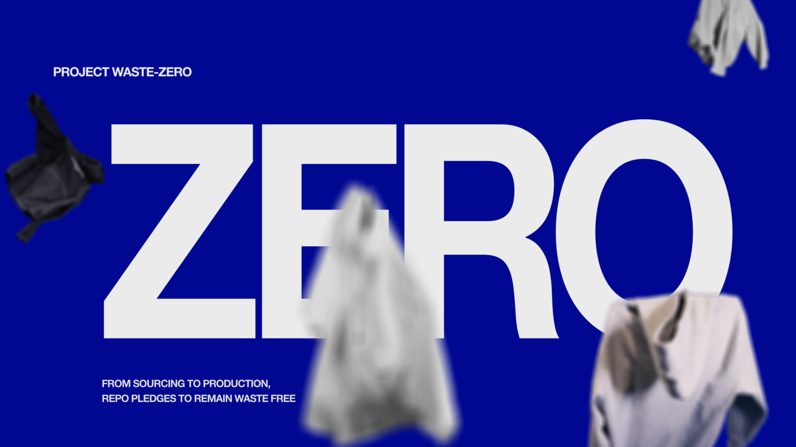
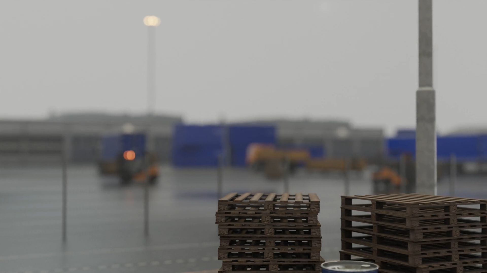
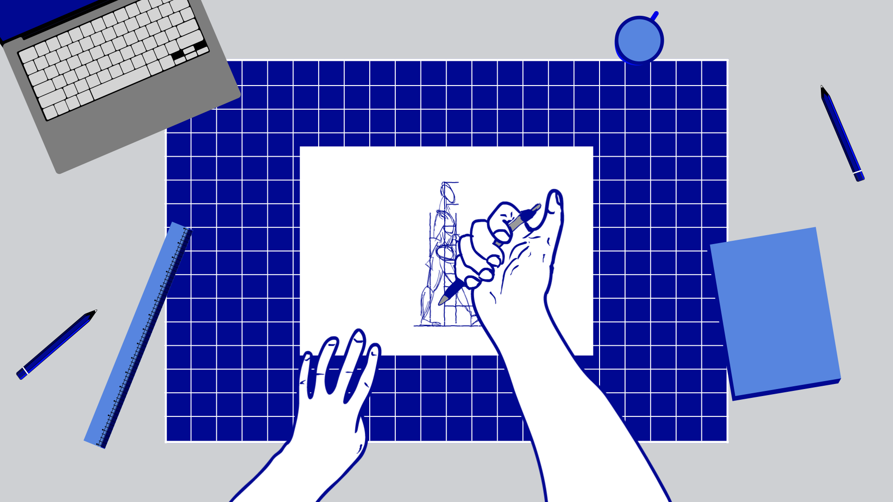
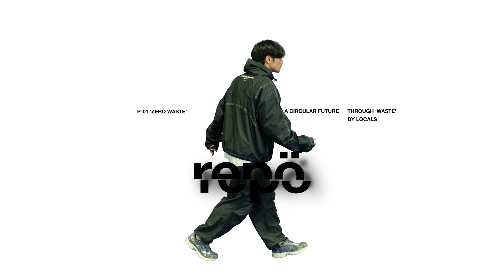

REPO
A conceptual brand transforming premium textile waste into limited collections.
[Branding]
Rather than embracing the visual cliches that are associated with sustainable fashion, I designed Repo to be bold, contemporary and fashion first. The vibrant cobalt blue and geometric slab serif creates this identity that communicates sustainability through exclusivity and attitude without the typical green brand look.

[Logo]
The Repo wordmark is a literal visualisation of the brand's circular ethos. Inspired by the garment construction process and sewing patterns, the wordmark is bisected and offset— symbolising the deconstruction of textiles and its reassembly into a new, elevated form.
[Finalised Styleframes]





Mixed media felt like a natural fit for Repo's story, blending the themes of fashion, craft and material recycling. The biggest challenge was that traditional mixed media has a nostalgic, retro collage look which directly opposed Repo's contemporary positioning. I spent a lot of time on styleframing exploring how realistic 3D renders, footage, vector and cel animation could be combined in a cohesive way that carried the carefully crafted nature of mixed media while looking sophisticated, modern and fashion centred.
[Experiments]


[Production breakdown]


1/3